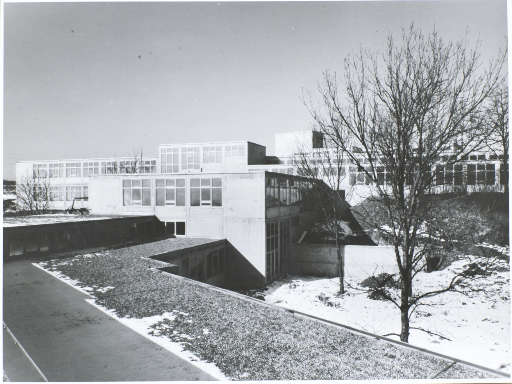
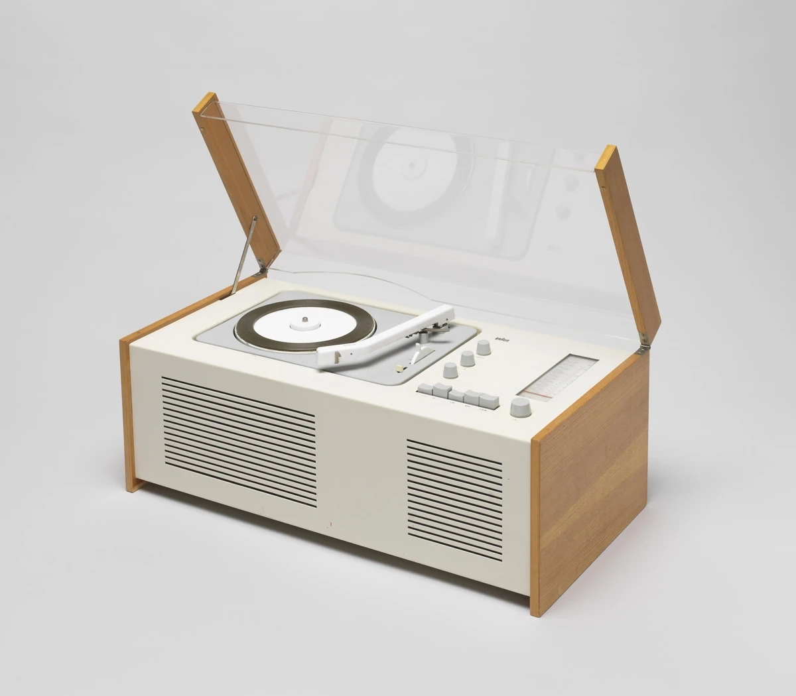
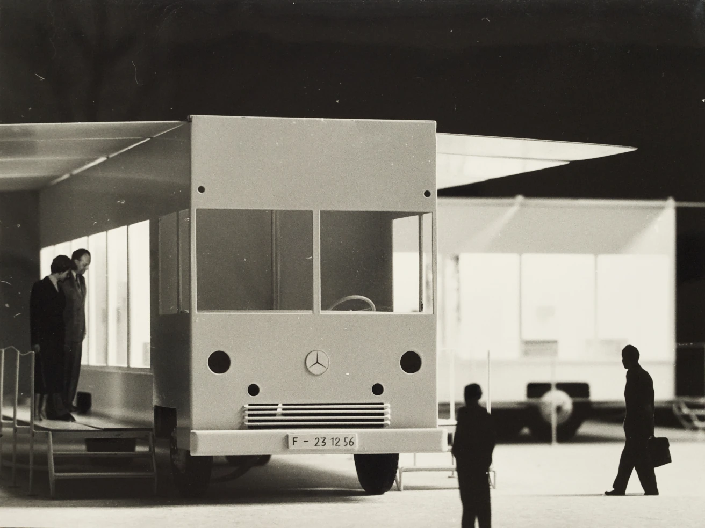
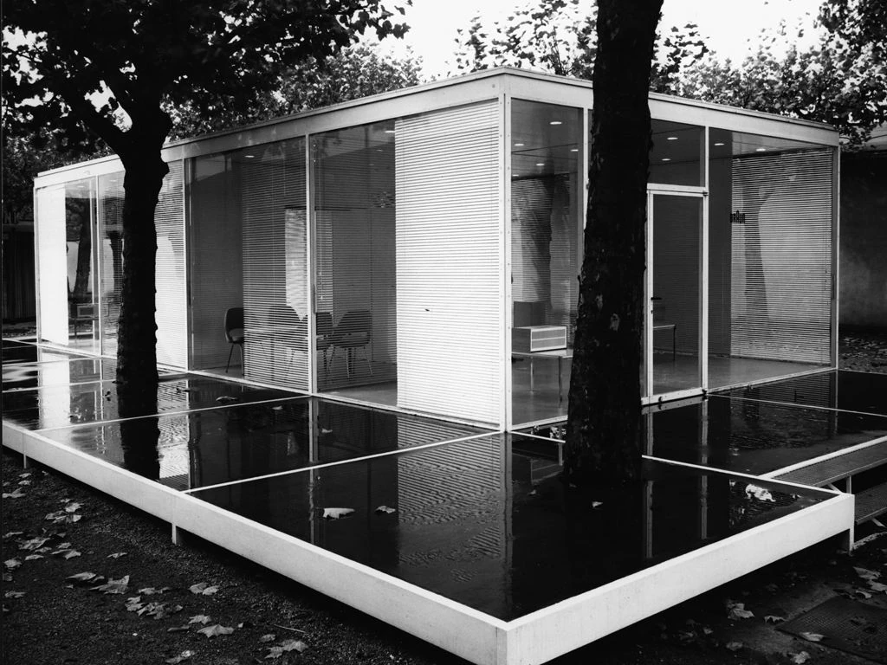

見どころ
新校舎を在学生のコンラートが撮影した写真です。高さの違う棟が斜面に沿ってつながり、長い窓と通路が低く水平に伸びています。
本文・作品図録公開（実作品画像4点） · 2026-11-22
学校・教育機関
HfG Ulm
ウルム造形大学は、戦後のドイツにできた学校です。
いすや食器など、毎日使う物のつくり方を考えました。
一つの形を整えるだけでなく、いくつもの物をどうそろえるかも考えています。
会社の文字や色を、いろいろな場所で同じ決まりで使う仕事もありました。
実作品を見る

画像を表示できませんでした。下の出典ページで確認できます。
マックス・ビル（設計） / 1955年
新校舎を在学生のコンラートが撮影した写真です。高さの違う棟が斜面に沿ってつながり、長い窓と通路が低く水平に伸びています。
撮影 Hans G. Conrad / René Spitz（権利者）, Sammlung René Spitz。CC BY-SA 3.0。掲載写真は全体を縮小。
出典で作品・資料を見る ↗CC BY-SA 3.0
出典先の原画像を開く ↗作品の所蔵・権利情報 ↗画像の利用条件 ↗図版全体を保ち、表示用のWebP画像を作成。
実作品を見る

画像を表示できませんでした。下の出典ページで確認できます。
ハンス・グゲロート、ディーター・ラムス / 1956年
透明なふたを開けると、左にレコード盤、右にラジオの目盛りとつまみがあります。ウルムの教員とブラウンのデザイナーが、二つの機器の操作面をひとつの箱にまとめました。
撮影 Viktor Fordell / Nationalmuseum（スウェーデン国立美術館）, NMK 156/1975。CC BY-SA 4.0。掲載写真は全体を縮小。
出典で作品・資料を見る ↗CC BY-SA 4.0
出典先の原画像を開く ↗作品の所蔵・権利情報 ↗画像の利用条件 ↗図版全体を保ち、表示用のWebP画像を作成。
実作品を見る

画像を表示できませんでした。下の出典ページで確認できます。
ハンス・G・コンラート / 1957年
車体の側面に庇が張り出し、その下に来場者の模型が立っています。コンラートが卒業制作で提案した、会場ごとに展示を運ぶバスです。写真は模型を人の目の高さから撮ったもので、実車は製造されませんでした。
撮影 Hans G. Conrad / René Spitz（権利者）, Sammlung René Spitz。CC BY-SA 3.0。掲載写真は全体を縮小。
出典で作品・資料を見る ↗CC BY-SA 3.0
出典先の原画像を開く ↗作品の所蔵・権利情報 ↗画像の利用条件 ↗図版全体を保ち、表示用のWebP画像を作成。
実作品を見る

画像を表示できませんでした。下の出典ページで確認できます。
オトル・アイヒャー、ハンス・グゲロート、ウルム造形大学の開発グループE2・E5 / 1959年
細い柱とガラスの壁で仕切った展示室に、同じ幅の区画が繰り返されます。学校の二つの開発グループが、ブラウンの製品を展示するために設計した建物です。
撮影 Hans G. Conrad / René Spitz（権利者）, Sammlung René Spitz。CC BY-SA 3.0。掲載写真は全体を縮小。
出典で作品・資料を見る ↗CC BY-SA 3.0
出典先の原画像を開く ↗作品の所蔵・権利情報 ↗画像の利用条件 ↗図版全体を保ち、表示用のWebP画像を作成。
作品の知名度や画像の入手しやすさだけで選びません。紹介したい作品と、調べて分かったことをまとめました。画像を載せられるかどうかは、別に確かめています。画像の利用許諾を確認できていないものは掲載していません。
校舎や学生の卒業制作、企業と協働した製品・展示館から、この学校で設計がどう教えられ、仕事につながったかを読みます。
原題：Ulmer Hocker
少ない木の部品をつないだ、学校生活のための道具です。
形だけでなく、いくつもの使い方を考えてつくられました。
家具・学校生活
少ない部材、そのつなぎ方、複数の使い道から、学校生活の道具を設計した例です。家具の見た目と、教育や工房での制作の関係を見ます。
1954年は設計した年です。Frankfurt所蔵17619が製造された年は未確認です。3枚のトウヒ材と、ブナ材の丸棒・底の補強を区別します。今作られている再生産品を、1954年当時の物としては示しません。
原題：TC 100
食堂で使うことを考えた食器です。
一つずつの形だけでなく、組み合わせ方や、積み重ねてしまうことも考えています。
食器システム
卒業制作として、食堂で使うことを想定した食器です。積み重ねられる食器を、組み合わせて使う仕組みとして設計しました。一つのカップだけでなく、収納、使い方、部品の組み合わせを見ます。
MoMA 2284.2001.1–11は、釉薬（ゆうやく）をかけた磁器11点です。Thomas Der Rosenthal製で、製造者が寄贈しました。HfGのMS148とは別の所蔵記録です。生産開始は資料によって1961年と1962年に分かれるため、断定しません。MoMAの該当ページには画像がありません。
原題：Radio-Phonograph（model SK 4/10）
音楽を聞くための家庭用の機械です。
白い金属、木、透明なふたを組み合わせています。
学校と会社が協力してつくりました。
電気製品・産業との共同制作
Braunと協力して作った具体例です。白い金属の外箱、木の部分、透明なふたを一つにまとめ、家庭用の音響機器の見た目を変えた点を見ます。簡潔な形だけでなく、企業との共同制作にも注目します。
MoMA 205.1958の個体をもとにしています。Braun製で、製造者が寄贈しました。HfGとの関係は、Gugelotと学校側の記録から説明します。RamsをHfGの学生や、この機器を一人で作った作者とは記しません。SK 4系列のすべてが同じ仕様ではありません。
原題：Lufthansa の視覚的な統一計画・規範マニュアル
航空会社の印刷物などに、共通の決まりをつくる仕事です。
すでに使われていた物を調べてから、文字や色などをそろえていきました。
視覚伝達・コーポレートデザイン
一つのロゴを作るだけの仕事ではありません。すでに使われていた、情報を伝えるための印刷物などを調べ、さまざまなものに共通のデザインの決まりを取り入れました。学校と企業、共同制作の関係がわかります。
規則をまとめたマニュアルAi.Ki.160と、1963年以降のE5紹介資料Ai P.132は別です。文字は初めは大文字のみで、1967年以降は大文字と小文字を使っています。今のブランドの画面を、1962年の作品の代わりにしません。掲載する具体的な見開きは未選定です。学校史で紹介されるSti D2.1566と、マニュアルAi.Ki.160も別の記録です。
新校舎を在学生のコンラートが撮影した写真です。高さの違う棟が斜面に沿ってつながり、長い窓と通路が低く水平に伸びています。
作品・資料の出典を見る ↗原題：Hochschule für Gestaltung Ulm
マックス・ビル（設計） / 1955年
透明なふたを開けると、左にレコード盤、右にラジオの目盛りとつまみがあります。ウルムの教員とブラウンのデザイナーが、二つの機器の操作面をひとつの箱にまとめました。
作品・資料の出典を見る ↗原題：Radio gramophone Braun SK 4
ハンス・グゲロート、ディーター・ラムス / 1956年
車体の側面に庇が張り出し、その下に来場者の模型が立っています。コンラートが卒業制作で提案した、会場ごとに展示を運ぶバスです。写真は模型を人の目の高さから撮ったもので、実車は製造されませんでした。
作品・資料の出典を見る ↗原題：Ausstellungs-Bus für Braun
ハンス・G・コンラート / 1957年
細い柱とガラスの壁で仕切った展示室に、同じ幅の区画が繰り返されます。学校の二つの開発グループが、ブラウンの製品を展示するために設計した建物です。
作品・資料の出典を見る ↗原題：Braun-Pavillon, Messe Frankfurt
オトル・アイヒャー、ハンス・グゲロート、ウルム造形大学の開発グループE2・E5 / 1959年
道具は、形が整っていれば使いやすいのでしょうか。ウルム造形大学（HfG Ulm）は、日常の道具や情報の伝え方を、使い方・生産・教育のつながりから考えた学校です。見た目の簡潔さに加え、複数の部品や情報を、一つの仕組みにどうまとめるかに注目します。
インゲ・ショル（Inge Scholl）、オトル・アイヒャー（Otl Aicher）、マックス・ビル（Max Bill）が設立しました。1953年に仮校舎で授業を始め、1955年には新校舎の公式開校式が行われました。閉校は1968年です。背景には、戦後の民主的な社会をつくるための教育という考えがありました。初期にはバウハウス（Bauhaus）を手本にしています。一方、理論や科学的な調べ方を実際の設計にどう結び付けるかは、学内でも議論されました。
以下は観察のための問いです。すべての作品に共通する固定ルールや、未取得画像の実見結果ではありません。
SK 4/10の白い金属の本体と透明な蓋（ふた）、ウルム・スツール（Ulm Stool）の木材など、色と材料を一緒に見ます。白や無彩色（むさいしょく：白・黒・灰色）だけで学校全体を説明しないようにします。
ルフトハンザ（Lufthansa）のデザインの決まりを記した資料では、文字一つの形だけでなく、さまざまな印刷物などの統一の仕方を見ます。1962年の開始時は大文字表記です。1967年以降は、大文字と小文字を組み合わせています。
ウルム・スツールの平らな板と丸棒を見てみましょう。部品のつなぎ方、運び方、使ううちにすり減ることへの工夫として読めます。丸や四角を使う形だからといって、この学校の作品とは判断できません。
一つだけで見た美しさと、複数を組み合わせる使い方を分けて考えます。製造や運用のルールにも注目しましょう。食器と、目で見て情報を伝えるデザインでは、共通の決まりに基づく設計がどう働くかを比べられます。
COMPARE
バウハウスとは別の、戦後の学校です。初期にその考えを受け継ごうとしたことと、独自の教育を探る中で起きた議論を分けます。科学的な方法に偏ることに、アイヒャーやマルドナード（Maldonado）らが異議を唱えたこともありました。「バウハウスは感覚、ウルムは科学」と二つに分けるだけでは説明できません。
項目を横に並べる ↗READ TODAY
現代の製品シリーズや情報デザインを見るときにも、個々の形だけでなく、共通のルールや共同制作の仕組みに目を向ける手がかりになります。
このページを書くときに使った資料です。作品の説明、画像を入手できたかどうか、画像を使う条件は、それぞれ別に確かめています。検索結果で読んだ情報と、元のページを開いて確かめた情報も、調査の記録で分けています。
この項目の実作品画像は4点、参照・関連画像は0点です。画像の収集は続けています。